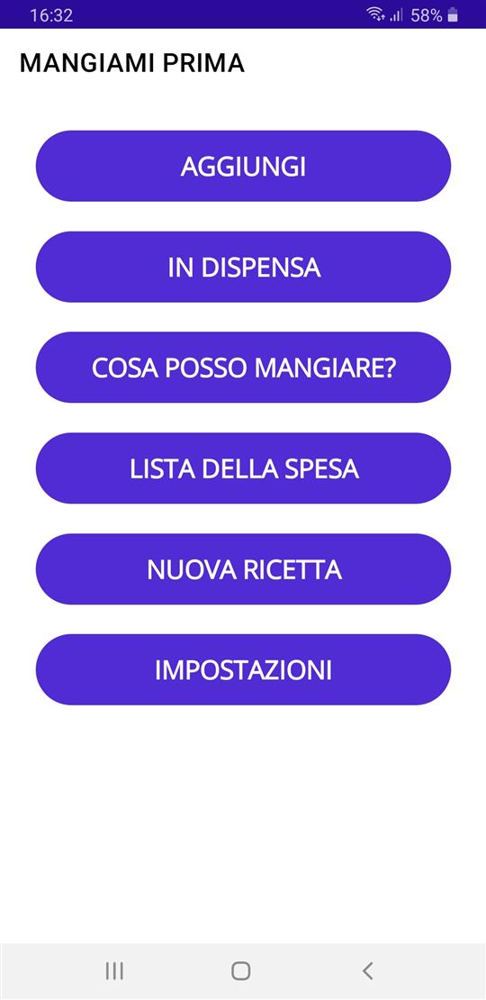
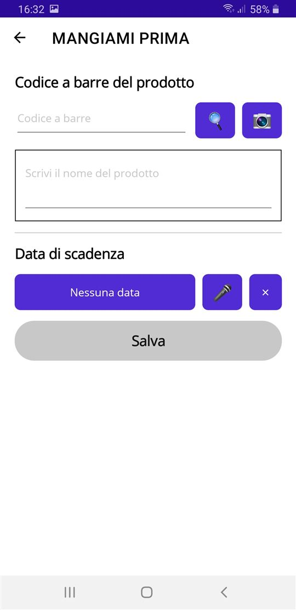
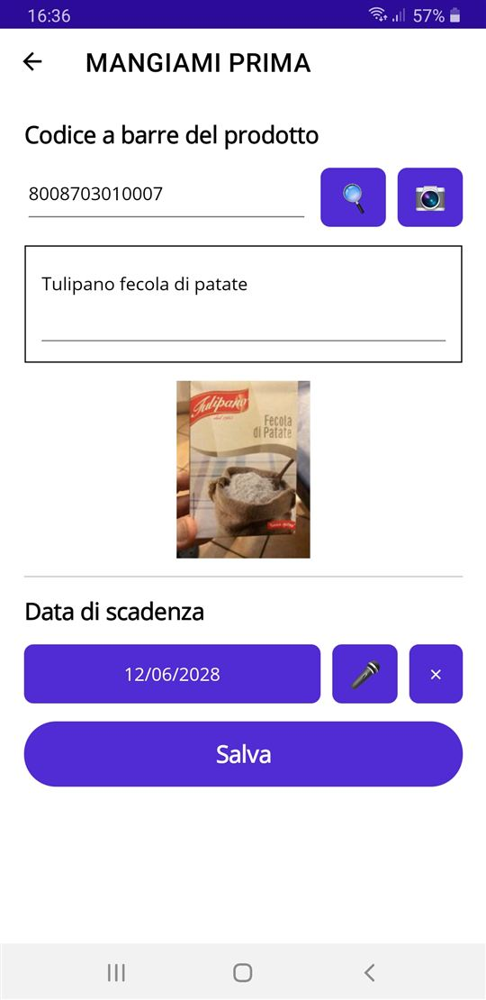
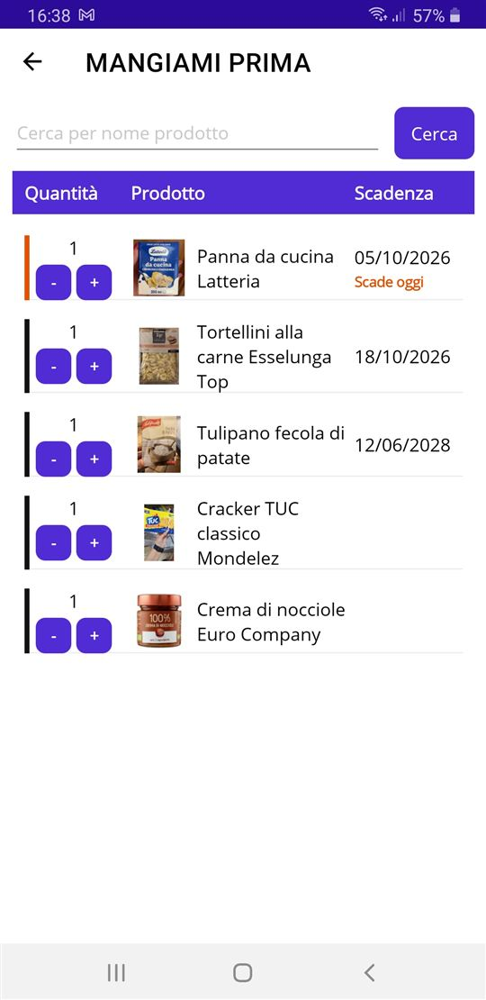
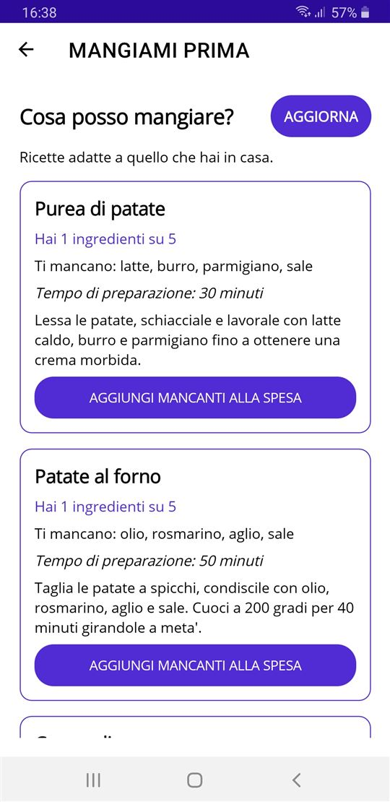
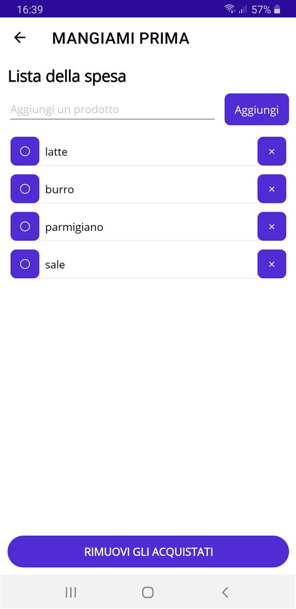
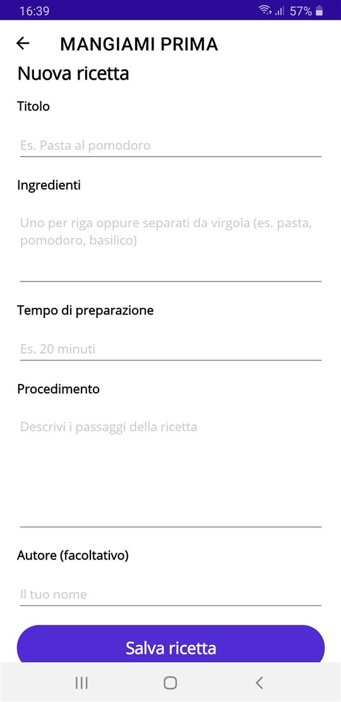

Mangiami Prima ti aiuta a non buttare più cibo. Tieni traccia di quello che hai in dispensa e in frigo, e l'app ti avvisa prima che scada.
Gratuita, con banner pubblicitari.
Richiede Android 6.0 o successivo. File di circa 31 MB.







Android può avvisarti che l'app non proviene da uno store. È normale per le app installate da file: l'app è firmata dallo sviluppatore e puoi verificarne l'integrità con l'impronta qui sotto.
Cerchi una versione più vecchia? Le trovi tutte, con le note di ogni rilascio, nell'elenco delle versioni.
Non ci sono aggiornamenti automatici. Per aggiornare, scarica da questa pagina la nuova versione e installala sopra la precedente: i tuoi dati restano.
Impronta SHA-256 del file MangiamiPrima-1.0.apk:
55487128cf651531322ec6ab17b919e641593593358e0d167b4e0a70265feaea
L'app è gratuita e mostra banner pubblicitari tramite Google AdMob. Nello Spazio Economico Europeo ti viene chiesto il consenso al primo avvio, e puoi modificarlo dalle Impostazioni dell'app.
Per segnalazioni o richieste: info.marcorosano@gmail.com